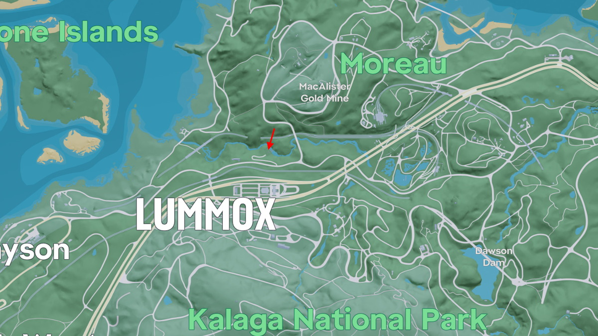
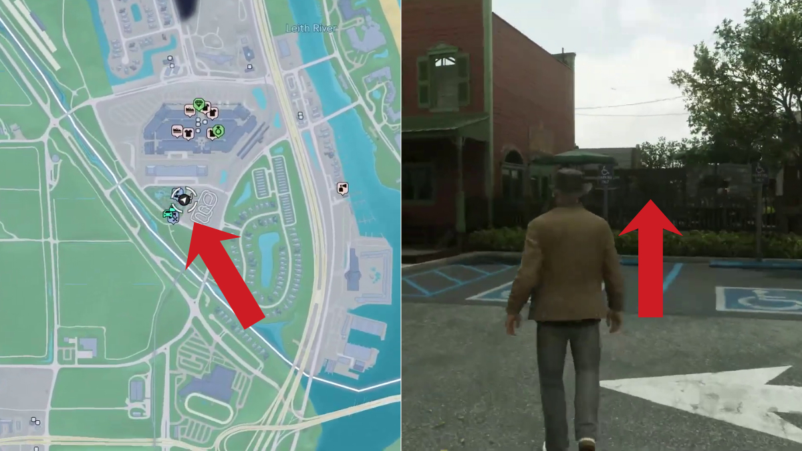

По главам
Глава 1Лодка у дома Джейсона, Попугай за винным, Параплан на дереве, Книга у задней двери: мемуары гангстера из GTA IV, Запертый гараж (успей до первой встречи с Мозесом в главе 2), Постер в клубе The Vault: секретная станция, Морской монстр (миссия «Island Dreams»), Номер на угнанном Phoenix: отсылка к «Сайнфелду» (миссия 5)
Глава 2Хэллоуинский дом в Capri (после открытия мастерской Мозеса), Машина на обочине ночью (ночью около 02:00), Дом с гаражом, Гаражная распродажа, Флаер у мотеля Starlet
Глава 3Уборщик Little Sam: камео Сэма Хаузера (миссия 25 «Boobie Time»), Секретная станция The Sniper of La Perle
После финалаЧиты: как вводить (и все 19 известных кодов в разделе читов)
Leonida Keys
Радиовышка Badger R&D
Key Lento, нужна открытая вся карта. Поднимись в комнату управления, опусти рычаг питания, нажми кнопку на стене и подожди у телевизора.
Key Lento, нужна открытая вся карта. Поднимись в комнату управления, опусти рычаг питания, нажми кнопку на стене и подожди у телевизора.
12 подстанций LPL
По всему штату, только своим ходом, без быстрого перемещения. На каждой синяя буква и кнопка или рычаг. Буквы по порядку: LIFEISPASSINGMEBY.
По всему штату, только своим ходом, без быстрого перемещения. На каждой синяя буква и кнопка или рычаг. Буквы по порядку: LIFEISPASSINGMEBY.
Что жать на подстанциях
PS5: ○, ○, L1, □, L1, □, □, □, L1, △, ○, △.
Xbox: B, B, LB, X, LB, X, X, X, LB, Y, B, Y.
На каждой подстанции жми одну кнопку по порядку, с 1-й подстанции по 12-ю.
PS5: ○, ○, L1, □, L1, □, □, □, L1, △, ○, △.
Xbox: B, B, LB, X, LB, X, X, X, LB, Y, B, Y.
На каждой подстанции жми одну кнопку по порядку, с 1-й подстанции по 12-ю.
SMS «U-235 REACTOR2 19-06»
Придёт после 12-й подстанции. Электростанция Tortoise Head, реактор 2, с 19:00 до 06:00 по игровым часам. Зайди внутрь.
Придёт после 12-й подстанции. Электростанция Tortoise Head, реактор 2, с 19:00 до 06:00 по игровым часам. Зайди внутрь.
Лодка у дома Джейсонаглава 1
Key Lento, двор Джейсона, с начала главы 1. Залезь на лодку, наведи камеру телефона или бинокль на экран навигатора.
Key Lento, двор Джейсона, с начала главы 1. Залезь на лодку, наведи камеру телефона или бинокль на экран навигатора.
скрин: Beebom
Попугай за виннымглава 1
Key Lento, за магазином Three Sheets Liquor, глава 1. Поговори с ним и спроси про деньги Kingfisher.
Key Lento, за магазином Three Sheets Liquor, глава 1. Поговори с ним и спроси про деньги Kingfisher.
скрин: Beebom
Флаер в туалете
Corsair Key, к северу от Key Lento. Мужской туалет, левая кабинка. Отсканируй QR на флаере в WAiNK, на SMS ответь TRUTH, дальше по указаниям.
Corsair Key, к северу от Key Lento. Мужской туалет, левая кабинка. Отсканируй QR на флаере в WAiNK, на SMS ответь TRUTH, дальше по указаниям.
скрин: Beebom
Параплан на деревеглава 1
Bobcat Key, южнее Capri, у Bobcat Bight, самый край пляжа. Смотри вверх, отстрели три стропы. Можно с главы 1.
Bobcat Key, южнее Capri, у Bobcat Bight, самый край пляжа. Смотри вверх, отстрели три стропы. Можно с главы 1.
Прыжок на авиабазу
Mile Zero Air Station, юго-запад Mariana County. Разгонись по куче земли у забора вдоль трассы или тарань главные ворота. На базе сразу 4 звезды.
Mile Zero Air Station, юго-запад Mariana County. Разгонись по куче земли у забора вдоль трассы или тарань главные ворота. На базе сразу 4 звезды.
Остров с SOS
Мелкий мангровый островок Leonida Keys, западнее основной группы. Подними телефон с песка и посмотри видео.
Мелкий мангровый островок Leonida Keys, западнее основной группы. Подними телефон с песка и посмотри видео.
скрин: Beebom
Крабовая лаборатория
Pelican Valley, болота Grassrivers к северу от Keys. Сначала включи щиток снаружи. Пароль к компьютеру вырезан на дереве в хижине. Сейф: 00072. Лодочный сарай: 0212.
Pelican Valley, болота Grassrivers к северу от Keys. Сначала включи щиток снаружи. Пароль к компьютеру вырезан на дереве в хижине. Сейф: 00072. Лодочный сарай: 0212.
скрин: Beebom
Заброшенный склад в Capri
Север Capri, заброшенный склад у Tortoise Lake. Приходи ночью, сначала сохранись. Оглуши прохожего, занеси на склад и положи на пентаграмму на полу. Держи под рукой коктейль Молотова или канистру.
Север Capri, заброшенный склад у Tortoise Lake. Приходи ночью, сначала сохранись. Оглуши прохожего, занеси на склад и положи на пентаграмму на полу. Держи под рукой коктейль Молотова или канистру.
Точки интереса: просто посмотреть
Журнал на террасе: йога-тренер Фабьен из GTA V
Дом Джейсона, столик у скамьи для жима. Журнал Body Copy, страница 3.
Дом Джейсона, столик у скамьи для жима. Журнал Body Copy, страница 3.
Книга у задней двери: мемуары гангстера из GTA IVглава 1
Дом Джейсона, столик у задней двери, глава 1. Прочитай.
Дом Джейсона, столик у задней двери, глава 1. Прочитай.
JoyStation: отсылка к Clair Obscur и «Маяку»
Дом Джейсона. Запусти игру Tenebrae Lux.
Дом Джейсона. Запусти игру Tenebrae Lux.
Комикс RX-Men №13: пародия на «Людей Икс»
Магазин 24/7 на севере Key Lento, стойка с журналами.
Магазин 24/7 на севере Key Lento, стойка с журналами.
Книга в Brian's Marina: Флако Эрнандес из RDR 2
Key Lento, Brian's Marina. Найди книгу внутри и прочитай.
Key Lento, Brian's Marina. Найди книгу внутри и прочитай.
Сувенирные лавки: мишка Тревора и рубашка Томми
Любая сувенирная лавка на Leonida Keys. Осмотри полки.
Любая сувенирная лавка на Leonida Keys. Осмотри полки.
Vice City
Запертый гаражглава 1
Vespucci Island, западнее Vice Beach. Вскрой гараж. Пригони то, что внутри, Мозесу до первой встречи с ним в главе 2.
Vespucci Island, западнее Vice Beach. Вскрой гараж. Пригони то, что внутри, Мозесу до первой встречи с ним в главе 2.
Мемориал Руссо
Восток Downtown, Catalan Blvd, мемориал Friends of Freedom. Днём заговори с ветераном у стены: спроси «What really happened?», потом «Russo?». Дальше езжай в Little Cuba, NW 4th Avenue: розовый дом с кубинскими флагами, правая лестница, вторая дверь справа. Посмотри фото у холодильника.
Восток Downtown, Catalan Blvd, мемориал Friends of Freedom. Днём заговори с ветераном у стены: спроси «What really happened?», потом «Russo?». Дальше езжай в Little Cuba, NW 4th Avenue: розовый дом с кубинскими флагами, правая лестница, вторая дверь справа. Посмотри фото у холодильника.
Пассажир в сером костюме
Катайся за Джейсона по Vice Beach. Если в машину сядет мужчина в сером костюме и очках, вези куда скажет.
Катайся за Джейсона по Vice Beach. Если в машину сядет мужчина в сером костюме и очках, вези куда скажет.
Постер в клубе The Vault: секретная станцияглава 1
Downtown, клуб The Vault, красный постер сразу за входом. С главы 1. Отсканируй в WAiNK (R1 / RB), после этого в радио появится The Vault Radio.
Downtown, клуб The Vault, красный постер сразу за входом. С главы 1. Отсканируй в WAiNK (R1 / RB), после этого в радио появится The Vault Radio.
Лифты в Haymarket Hotel
Vice Beach, западнее Ocean Beach, за рядом магазинов. После пролога, после полуночи. Внутри налево к лифтам, зайди в правый и нажми вверх.
Vice Beach, западнее Ocean Beach, за рядом магазинов. После пролога, после полуночи. Внутри налево к лифтам, зайди в правый и нажми вверх.
Номер в Sunlite Motel
Ocean Beach, мотель Sunlite. С 12:00 до 13:00. Дёрни дверь первого номера на втором этаже. Пройди по балкону, спустись по лестнице и вернись к той же двери.
Ocean Beach, мотель Sunlite. С 12:00 до 13:00. Дёрни дверь первого номера на втором этаже. Пройди по балкону, спустись по лестнице и вернись к той же двери.
Хэллоуинский дом в Capriглава 2
Юго-восток Capri, угол Fortuna Street и Viola Street, чуть южнее Tortoise Lake. С главы 2, когда открыта мастерская Мозеса. Сядь в то, что стоит на подъезде к дому, и уезжай. Отсканируй в WAiNK и дом, и транспорт.
Юго-восток Capri, угол Fortuna Street и Viola Street, чуть южнее Tortoise Lake. С главы 2, когда открыта мастерская Мозеса. Сядь в то, что стоит на подъезде к дому, и уезжай. Отсканируй в WAiNK и дом, и транспорт.
Точки интереса: просто посмотреть
Квартира Декстера Моргана: Trinity Apartments
Washington Island, рядом с магазином Top Fun Drones. Внутрь нельзя, лезь на крышу.
Washington Island, рядом с магазином Top Fun Drones. Внутрь нельзя, лезь на крышу.
скрин: Beebom
Особняк Томми Версетти на Starfish Island
Starfish Island, особняк у воды. Внутрь не пускают, смотри снаружи.
Starfish Island, особняк у воды. Внутрь не пускают, смотри снаружи.
скрин: Beebom

Уборщик Little Sam: камео Сэма Хаузераглава 3
Глава 3, миссия 25 «Boobie Time». Смотри на уборщика в клубе.
Глава 3, миссия 25 «Boobie Time». Смотри на уборщика в клубе.
Север и глубинка
Вышка севернее Hamlet
South Vice-Dale County, самая высокая вышка к северу от Hamlet. Лезть минут семь. Наверху: △/Y взять, L2 + R2 бросить.
South Vice-Dale County, самая высокая вышка к северу от Hamlet. Лезть минут семь. Наверху: △/Y взять, L2 + R2 бросить.
скрин: Beebom
Рык в болотах
Дорога южнее Hamlet, юго-восточнее Cottonmouth Lake. Второе место: островок южнее Watson Bay. Иди на звук. Потом ищи постеры по штату и звони по номеру.
Дорога южнее Hamlet, юго-восточнее Cottonmouth Lake. Второе место: островок южнее Watson Bay. Иди на звук. Потом ищи постеры по штату и звони по номеру.
скрин: Beebom
Машина на обочине ночьюглава 2
Kelly County, грунтовка северо-западнее мотеля Starlet, восточнее Port Gellhorn. Нужна глава 2, ночь около 02:00. Машина с мигающими фарами, бывает не каждую ночь.
Kelly County, грунтовка северо-западнее мотеля Starlet, восточнее Port Gellhorn. Нужна глава 2, ночь около 02:00. Машина с мигающими фарами, бывает не каждую ночь.
скрин: Beebom
Дом с гаражомглава 2
Leonard County, юго-западнее Belville. Заходи через гараж. Удобнее всего после глав 2-3.
Leonard County, юго-западнее Belville. Заходи через гараж. Удобнее всего после глав 2-3.
скрин: Beebom
Гаражная распродажаглава 2
Юг Port Gellhorn, Orchard Avenue, у Dirt Merchants. Синий дом с забором, белый диван. Глава 2.
Юг Port Gellhorn, Orchard Avenue, у Dirt Merchants. Синий дом с забором, белый диван. Глава 2.
скрин: Beebom
Руины у Mount Kalaga
Район Moreau, руины Lawton Co. Paper Mill к северу от Mount Kalaga, место для медитации. Фиолетовый брезент: взаимодействуй, потом смотри вверх и прыгай с руин.
Район Moreau, руины Lawton Co. Paper Mill к северу от Mount Kalaga, место для медитации. Фиолетовый брезент: взаимодействуй, потом смотри вверх и прыгай с руин.

скрин: Beebom
Флаер у мотеля Starletглава 2
Мотель Starlet, у ресепшена, флаер Pilot Wanted, глава 2. Дальше ферма McKittrick во Frogswater. Вернись через несколько игровых недель.
Мотель Starlet, у ресепшена, флаер Pilot Wanted, глава 2. Дальше ферма McKittrick во Frogswater. Вернись через несколько игровых недель.
Сбежавшая корова
Западнее Ambrosia, южнее Frogswater. Играй за Лусию. Фермер плачет у дороги: догони корову.
Западнее Ambrosia, южнее Frogswater. Играй за Лусию. Фермер плачет у дороги: догони корову.
скрин: Beebom


Компаунд Фредди
Запад North Leonard County. Внутрь так просто не пустят, придётся повозиться. Загляни ещё раз, когда будет ураган.
Запад North Leonard County. Внутрь так просто не пустят, придётся повозиться. Загляни ещё раз, когда будет ураган.
скрин: Beebom
Дом с открытым гаражом в Port Gellhorn
Kelly County, север Port Gellhorn, дом с открытым гаражом и компанией внутри. С 00:00 до 04:00. Присоединись и выпей с ними, в диалоге выбери «Rock On». Поезжай с ними в фургоне к костру и смотри в огонь.
Kelly County, север Port Gellhorn, дом с открытым гаражом и компанией внутри. С 00:00 до 04:00. Присоединись и выпей с ними, в диалоге выбери «Rock On». Поезжай с ними в фургоне к костру и смотри в огонь.
Таблички Hollow Earth
Kelly County, западнее Emerald Springs. Иди по табличкам Hollow Earth до конца тропы. Поговори с продавцом: зажми L2.
Kelly County, западнее Emerald Springs. Иди по табличкам Hollow Earth до конца тропы. Поговори с продавцом: зажми L2.
Водосток у плотины Tallaloko
Lummox County, сразу к северу от Millport, между городком и Lake Tallaloko. Бетонный водосток с перилами и фонарём. Припаркуйся и спустись по откосу в сторону пара. Лучше вечером или ночью.
Lummox County, сразу к северу от Millport, между городком и Lake Tallaloko. Бетонный водосток с перилами и фонарём. Припаркуйся и спустись по откосу в сторону пара. Лучше вечером или ночью.
Вышка на Mount Kalaga: замок с кодом
Lummox County, горы Mount Kalaga National Park, высокая металлическая вышка у вершины. Код написан на табличках у верхней площадки. Внизу домик с кодовым замком: 69185.
Lummox County, горы Mount Kalaga National Park, высокая металлическая вышка у вершины. Код написан на табличках у верхней площадки. Внизу домик с кодовым замком: 69185.
Люк в лесу у Big Pine
Юг North Mariana County, лес южнее Ammu-Nation на трассе, западнее Big Pine. Запертое здание не трогай, ищи люк в земле. Кейпад на дереве за спиной: 085355. Внизу с фонарём дойди до щитка и включи свет, потом в пультовой нажми красную кнопку.
Юг North Mariana County, лес южнее Ammu-Nation на трассе, западнее Big Pine. Запертое здание не трогай, ищи люк в земле. Кейпад на дереве за спиной: 085355. Внизу с фонарём дойди до щитка и включи свет, потом в пультовой нажми красную кнопку.
Точки интереса: просто посмотреть
Монумент в Manifest Canyon: загадка в духе Mount Chiliad
Север каньона, западнее трассы SR-73, севернее Port Gellhorn. Осмотри символы на основании или приходи ночью в грозу.
Север каньона, западнее трассы SR-73, севернее Port Gellhorn. Осмотри символы на основании или приходи ночью в грозу.
скрин: Beebom
Мини-гольф на Valentine Drive: Артур Морган из RDR 2
Leonard County, рядом с картингом Hot Skidz. Пройди по деревянному настилу, смотри под ноги.
Leonard County, рядом с картингом Hot Skidz. Пройди по деревянному настилу, смотри под ноги.

скрин: Beebom
Вершина Mount Kalaga: мини-Стоунхендж
Самый север карты. Поднимись на вершину.
Самый север карты. Поднимись на вершину.
Таверна Jacob's: вестерн про New Austin из RDR
Millport. Найди книгу и прочитай.
Millport. Найди книгу и прочитай.
Остановка-ананас на Cicada Avenue: дом Губки Боба
Рядом с Bluegrass. Жёлтая остановка у дороги.
Рядом с Bluegrass. Жёлтая остановка у дороги.
Кладбище животных у Grayson: «Кладбище домашних животных» Стивена Кинга
Lummox County, лес к югу от Grayson, рядом с State Route 73. Найди могилки вокруг алтаря и отсканируй алтарь в WAiNK.
Lummox County, лес к югу от Grayson, рядом с State Route 73. Найди могилки вокруг алтаря и отсканируй алтарь в WAiNK.
Море
Остров Sharktooth
Островок к северу от Waning Sands, северо-восток Leonard County, добраться только на лодке. Сначала пройди мемориал Руссо. Дверь в задней части острова: 010317. Внутри справа включи свет, слева кабинет: сядь в кресло, открой ящик, сними трубку и дослушай плёнку. Сейф: 2975.
Островок к северу от Waning Sands, северо-восток Leonard County, добраться только на лодке. Сначала пройди мемориал Руссо. Дверь в задней части острова: 010317. Внутри справа включи свет, слева кабинет: сядь в кресло, открой ящик, сними трубку и дослушай плёнку. Сейф: 2975.
Лай в открытом море
Уплыви подальше от берега, брось лодку и поплавай несколько минут. Лучше всего у Key Lento. Как услышишь лай, залезай к нему и не слезай до самого берега.
Уплыви подальше от берега, брось лодку и поплавай несколько минут. Лучше всего у Key Lento. Как услышишь лай, залезай к нему и не слезай до самого берега.
Маяк St. Lucia
Little Hardin Island, северная сторона, ночью. Потом вернись к маяку после полуночи, залезь наверх и около 01:30 смотри в бинокль на море.
Little Hardin Island, северная сторона, ночью. Потом вернись к маяку после полуночи, залезь наверх и около 01:30 смотри в бинокль на море.
Указатель у пианино
Острова южнее Cottonmouth Lake и Gambit Bay, тот, где пианино. Иди вглубь деревьев.
Острова южнее Cottonmouth Lake и Gambit Bay, тот, где пианино. Иди вглубь деревьев.
скрин: Beebom
Морской монстрглава 1
Глава 1, миссия «Island Dreams», задание Кентона. Под водой у затонувшего корабля смотри на дно. В свободной игре почти не встречается.
Глава 1, миссия «Island Dreams», задание Кентона. Под водой у затонувшего корабля смотри на дно. В свободной игре почти не встречается.
Телефон, радио, журналы
Секретная станция The Sniper of La Perleглава 3
С главы 3. Отсканируй в WAiNK четыре постера на севере Vice City: тату-салон TWA Ponya, Drip Drops, ресторан Aunt Zola's Soul Food и Jack of Hearts, второй этаж, студия звукозаписи. Телефон сам подскажет, когда постер рядом.
С главы 3. Отсканируй в WAiNK четыре постера на севере Vice City: тату-салон TWA Ponya, Drip Drops, ресторан Aunt Zola's Soul Food и Jack of Hearts, второй этаж, студия звукозаписи. Телефон сам подскажет, когда постер рядом.
Точки интереса: просто посмотреть
Рингтон Wind Chimes: телефон Майкла из GTA V
Телефон -> Настройки -> Рингтоны, выбери Wind Chimes.
Телефон -> Настройки -> Рингтоны, выбери Wind Chimes.
Пост про RAC 7: шутка про GTA 7
Snapmatic, листай ленту, ищи Barnyard Blue.
Snapmatic, листай ленту, ищи Barnyard Blue.
Аккаунт badlife999: отсылка к Juice WRLD
Snapmatic, найди аккаунт badlife999.
Snapmatic, найди аккаунт badlife999.
Ведущий Vice City FM: «Странный Эл» Янкович
Включи Vice City FM и послушай ведущего.
Включи Vice City FM и послушай ведущего.
DJ Dicky на Kaleidoscope FM: Джереми Айронс
Включи Kaleidoscope FM и послушай DJ Dicky, голос узнаешь сразу.
Включи Kaleidoscope FM и послушай DJ Dicky, голос узнаешь сразу.
Подкаст Final Act: Уэйд из GTA V
Найди подкаст Final Act, выпуск «Juggling with the Turd», и послушай интервью.
Найди подкаст Final Act, выпуск «Juggling with the Turd», и послушай интервью.
Карточки рестлеров B.A.M.
Карточки раскиданы по всей Leonida, собирай по пути.
Карточки раскиданы по всей Leonida, собирай по пути.
Номер на угнанном Phoenix: отсылка к «Сайнфелду»глава 1
Глава 1, миссия 5. Посмотри на номерной знак.
Глава 1, миссия 5. Посмотри на номерной знак.
Управление: неочевидные кнопки
Выйти, не заглушив мотор
△/Y дважды при выходе из машины.
△/Y дважды при выходе из машины.
Облокотиться на машину или стену
Встань рядом и удерживай ○/B.
Встань рядом и удерживай ○/B.
Облокотиться на перила
Встань рядом с перилами и нажми L3.
Встань рядом с перилами и нажми L3.
Сесть на край бассейна или причала
Встань у края и удерживай ○/B.
Встань у края и удерживай ○/B.
Толкать машину
Подойди вплотную к капоту или багажнику и иди на неё.
Подойди вплотную к капоту или багажнику и иди на неё.
Перевернуть машину обратно
Встань рядом с перевёрнутой машиной, нажми L3, потом удерживай □/X. Работает и с лодками, и с гидроциклами.
Встань рядом с перевёрнутой машиной, нажми L3, потом удерживай □/X. Работает и с лодками, и с гидроциклами.
Сбить прохожего дверью
□/X на ходу: дверь распахнётся.
□/X на ходу: дверь распахнётся.
Фары и пригнуться в машине
В машине ○/B включает фары. Если удерживать ○/B, персонаж пригнётся.
В машине ○/B включает фары. Если удерживать ○/B, персонаж пригнётся.
Включить или выключить радио
В машине дважды нажми крестовину влево.
В машине дважды нажми крестовину влево.
Автопилот
Удерживай крестовину вниз, нажми Options, потом удерживай ○/B.
Удерживай крестовину вниз, нажми Options, потом удерживай ○/B.
Накричать на водителей
Рядом с машинами дважды нажми R3.
Рядом с машинами дважды нажми R3.
Вид от первого лица
Удерживай L2/LT и нажми R3.
Удерживай L2/LT и нажми R3.
Надеть кепку по-другому
Удерживай L1/LB и жми крестовину.
Удерживай L1/LB и жми крестовину.
Переложить напиток в другую руку
Когда в руке напиток, нажми крестовину влево.
Когда в руке напиток, нажми крестовину влево.
Схватить противника
В драке удерживай R2/RT.
В драке удерживай R2/RT.
Показать средний палец
На улице нажми L2 + R1.
На улице нажми L2 + R1.
Музыка, когда идёшь пешком
Купи наушники в Zeke's Gadgets, около $150. После этого радио играет и без машины.
Купи наушники в Zeke's Gadgets, около $150. После этого радио играет и без машины.
Читы (только после финала)
Как вводить коды
Работает только после финальной миссии. Достань телефон (крестовина вверх), на главном экране зажми L1 + R1 (на Xbox LB + RB) и набери код крестовиной. Каждый чит ещё надо открыть: Пауза, R1/RB до вкладки Progress, пункт Cheats, там у каждого написано условие. С включённым читом игра не сохраняется и трофеи не выпадают, так что сохранись заранее.
Работает только после финальной миссии. Достань телефон (крестовина вверх), на главном экране зажми L1 + R1 (на Xbox LB + RB) и набери код крестовиной. Каждый чит ещё надо открыть: Пауза, R1/RB до вкладки Progress, пункт Cheats, там у каждого написано условие. С включённым читом игра не сохраняется и трофеи не выпадают, так что сохранись заранее.
$250 000
↑ → ↓ ← ↑ ← ↓ → (Открыть: пройди сюжет.)
↑ → ↓ ← ↑ ← ↓ → (Открыть: пройди сюжет.)
Бесконечный фокус
↓ ↑ ↑ ↓ ↑ ↓ ↑ ↓ ↑ → (Открыть: пройди сюжет.)
↓ ↑ ↑ ↓ ↑ ↓ ↑ ↓ ↑ → (Открыть: пройди сюжет.)
Удары и пули отбрасывают
↓ ↑ ← ← → ↓ ↓ ↑ ↓ (Открыть: пройди сюжет.)
↓ ↑ ← ← → ↓ ↓ ↑ ↓ (Открыть: пройди сюжет.)
Бронежилет
↓ ↑ ← ↑ ↑ ↑ ↑ ↑ ↓ ↓ (Открыть: 100 тренировок.)
↓ ↑ ← ↑ ↑ ↑ ↑ ↑ ↓ ↓ (Открыть: 100 тренировок.)
Поднять уровень Heat
← ↓ → ↓ ↑ ↓ ↑ (Открыть: 25 раз уйди от 3 звёзд.)
← ↓ → ↓ ↑ ↓ ↑ (Открыть: 25 раз уйди от 3 звёзд.)
Поднять розыск
← ↓ → ↓ ↑ → ↑ (Открыть: 50 раз уйди от 3 звёзд.)
← ↓ → ↓ ↑ → ↑ (Открыть: 50 раз уйди от 3 звёзд.)
Опьянение
↑ ← → ↑ ↑ ← → ↑ ← → (Открыть: потрать $2500 на алкоголь.)
↑ ← → ↑ ↑ ← → ↑ ← → (Открыть: потрать $2500 на алкоголь.)
Полный боезапас
↓ ↑ → ↓ ← ← ↑ ↑ ↓ ← (Открыть: 25 бронзовых медалей в тирах.)
↓ ↑ → ↓ ← ← ↑ ↑ ↓ ← (Открыть: 25 бронзовых медалей в тирах.)
Бесконечные патроны
↓ ↑ → ↓ ← ← ↑ ↓ ↓ ↓ (Открыть: 25 серебряных медалей в тирах.)
↓ ↑ → ↓ ← ← ↑ ↓ ↓ ↓ (Открыть: 25 серебряных медалей в тирах.)
Без перезарядки
↓ ↑ → ↓ ← ← ↑ ↓ ↓ ↑ (Открыть: 25 золотых медалей в тирах.)
↓ ↑ → ↓ ← ← ↑ ↓ ↓ ↑ (Открыть: 25 золотых медалей в тирах.)
Взрывающиеся мячи
↓ ↑ ← ← → ↓ ↓ ↑ → (Открыть: задень взрывом 20 врагов.)
↓ ↑ ← ← → ↓ ↓ ↑ → (Открыть: задень взрывом 20 врагов.)
Машина отбрасывает при ударе
↓ ↑ ← ← → ↓ ← ↑ ↓ (Открыть: задави машиной 25 человек.)
↓ ↑ ← ← → ↓ ← ↑ ↓ (Открыть: задави машиной 25 человек.)
Сменить погоду
↓ → ↑ ↓ → ↑ → (Открыть: по GamesRadar надо открыть всю карту, GTAside условие пока не подтвердил.)
↓ → ↑ ↓ → ↑ → (Открыть: по GamesRadar надо открыть всю карту, GTAside условие пока не подтвердил.)
Машина Maibatsu Boomazoom
← ↑ → ↓ ← ← ↑ ← (Открыть: 5 испытаний на покупки.)
← ↑ → ↓ ← ← ↑ ← (Открыть: 5 испытаний на покупки.)
Машина MTL Pumper
← ↑ → ↓ ← → → ↑ (Открыть: найди MTL Pumper (список в меню Progress).)
← ↑ → ↓ ← → → ↑ (Открыть: найди MTL Pumper (список в меню Progress).)
Бульдозер HVY
← ↑ → ↓ ← → → ↓ (Открыть: найди HVY Bulldozer (список в меню Progress).)
← ↑ → ↓ ← → → ↓ (Открыть: найди HVY Bulldozer (список в меню Progress).)
Фильтр Cataclysm: дым и мгла
↓ ↓ ↑ → → ↑ ← ← → → (Открыть: найди Vamos Марты (список в меню Progress).)
↓ ↓ ↑ → → ↑ ← ← → → (Открыть: найди Vamos Марты (список в меню Progress).)
Фильтр Dollhouse: яркий и узкий кадр
↓ ↓ ↑ → → ↑ ← ← ↓ → (Открыть: проведи 8 часов с напарником.)
↓ ↓ ↑ → → ↑ ← ← ↓ → (Открыть: проведи 8 часов с напарником.)
Фильтр Faded Glory: старый цветной телевизор
↓ ↓ ↑ → → ↑ ← ← ← → (Открыть: ограбь с напарником 50 магазинов.)
↓ ↓ ↑ → → ↑ ← ← ← → (Открыть: ограбь с напарником 50 магазинов.)
WAiNK: сканируй приложением
1. Рождественский дом - Key Lento, самая западная улица
2. Шале Plunge Masters - та же улица, мурал за сараем
3. Abismo Key - через мангры на юг до пляжа
4. Судно у берега - юго-восточный остров Permit Keys, мыс
5. Пляжная вечеринка - центральные острова Permit Keys, северный край
6. Указатель - рядом с вечеринкой, за деревьями
7. Goose Key - Mile Zero Air Station, вдоль берега на северо-восток
8. Пианино - острова южнее Cottonmouth Lake и Gambit Bay
9. Яркий пруд - болото севернее, у таблички-предупреждения
10. Акулы на пляже - Wetman Bay, южные острова
11. Wetman Bay - остров севернее акул
12. Ферма NoFlusher - западнее болотной базы Kingfisher